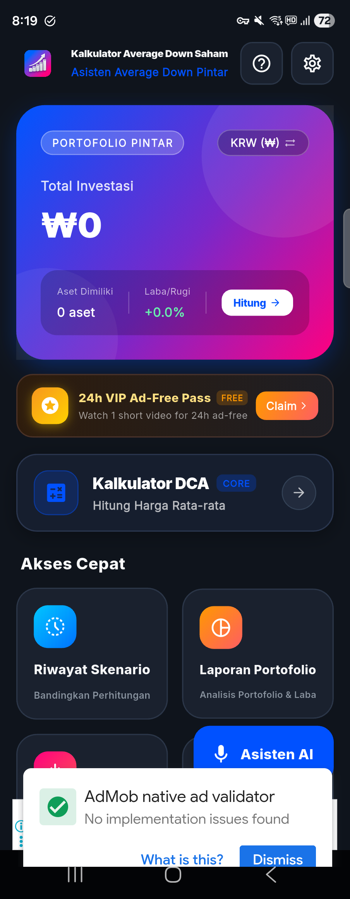
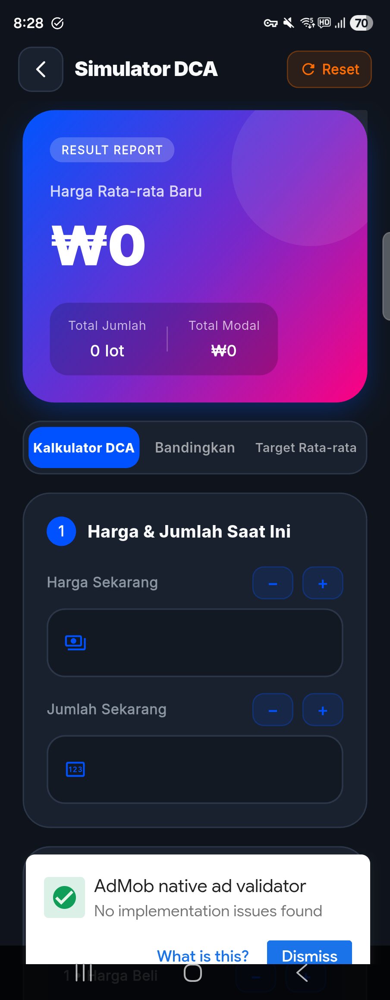
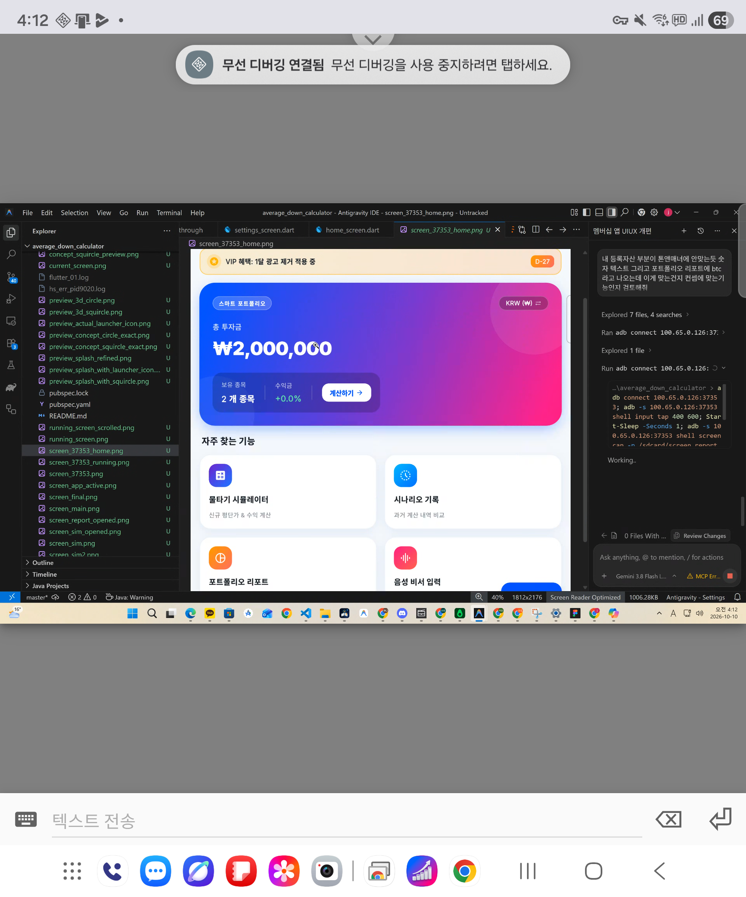

변동성 장세 개인 투자자를 위한 알고리즘 기반 멀티모달 자산 방어 솔루션
급락하는 주식·크립토 시장에서 감정적 뇌동매매를 방지하고, STT 자연어 음성 인제스천과 가중평균·Goal Seeking 역산 엔진을 통해 투자자의 리스크를 최소화하는 고성능 금융 유틸리티 모바일 앱입니다.
시장 리서치, PRD, 디자인 시스템 설계 및 클라이언트 100% 단독 구축
Speech-to-Text, Google Fonts, AdMob VIP Lifecycle Engine

거시경제 하락장 속 개인 투자자의 손실 회피 편향과 현업 제품의 한계 분석
"사도 사도 평단은 거의 안 내려가고 비중만 눈덩이처럼 불어나요."
기존 계산기는 단순 합산만 제공하여, 추가 매수 차수별 한계 효용(평단 인하 효율)과 포트폴리오 편중 위험을 시각적으로 진단하지 못함.
"급변하는 호가 앞에서 계산기 치다가 매수 타이밍을 놓쳐요."
키패드로 단가 8자리, 수량 5자리를 일일이 타이핑하는 사이 호가가 왜곡됨. 초단위 의사결정을 돕는 멀티모달 입력(음성, 프리셋 칩)의 부재.
"탈출 목표가에 도달하려면 지금 몇 주를 더 사야 하죠?"
시중의 모든 계산기는 순방향 결과 연산만 지원할 뿐, 목표 평단가 도달에 필요한 필수 매수 수량을 산출하는 Goal Seeking 역산 모델이 없음.
온보딩부터 데이터 인제스천, 알고리즘 시뮬레이션, 가치 실현에 이르는 엔드투엔드 파이프라인

Figma Tokens Studio 및 Flutter 코드가 1:1로 결합된 확장 가능한 토큰 아키텍처
고대비 다크/라이트 테마 및 시맨틱 금융 컬러
Google Fonts Inter 기반 단일화 & 고정폭 수치 폰트
tokens.json (W3C Community Group 규격)
피그마 Tokens Studio 플러그인과 Flutter의 AppColors, AppTextStyles가 동일한 명칭 체계를 유지하여 디자인-엔지니어링 핸드오프 오버헤드를 0으로 축소.
STT 자연어 음성 인식, 24시간 VIP 광고 제어 및 보유 자산 영속화 관리
보상형 광고 1회 시청 시 24시간 동안 전면/배너 광고를 완전 차단. SharedPreferences 만료 시각을 1초 단위 타이머로 카운트다운하여 유저 잔존율(Retention) 극대화.
"삼성전자 75,000원에 100주, 68,000원에 50주 물타기" 음성을 실시간 수신하여 종목명, 단가, 수량을 정규식 엔진으로 1초 만에 자동 파싱 및 분리.
네트워크 오프라인 환경에서도 100% 무결성을 보장하는 SQLite 로컬 DB 기반 자산 캐러셀. 탭 시 해당 종목의 파라미터를 시뮬레이터로 즉시 주입.
1~N차 분할 매수 누적 가중평균 연산 및 동일 자금 대비 전략 대조 매트릭스

차수별 매수 단가와 수량을 누적 집계하여 실시간 평단가 및 방어율(-%) 산출 (150ms 무중단 디바운스 적용).
동일한 총알(원금)에서 5:5 균등 매수 vs 3:7 피라미딩 매수 중 어느 전략이 평단가 방어에 더 효율적인지 좌우 화면으로 동시 검증.
검토 완료된 시뮬레이션 결과를 UUID 기반 고유 키로 히스토리 DB에 저장하여 언제든 이전 계산으로 롤백 및 재시뮬레이션 지원.
목표 평단가 도달에 필요한 필수 매수 수량 및 추가 자금 역산 수학 모델
현재 보유 상태(P0, Q0)에서 사용자가 희망하는 목표 평단가(Pt)에 도달하기 위해 추가 매수가(Pa)에서 매수해야 하는 정확한 수량을 역산출.
목표 달성에 필요한 총 매수 대금(Q_add × P_add)을 계산하고, 기존 자산 대비 몇 배의 비중이 확대되는지 위험 경고 배지 제공.
도달 불가능 조건(Pt ≤ Pa 또는 Pt ≥ P0) 감지 시 결과 카드를 비활성화하고 "추가 매수가격보다 높은 목표가를 설정하세요" 안내 문구 노출.
종목별 투자 비중 진단, 물타기 시급도 분석 및 고화질 리포트 아티팩트 공유

전체 투자 원금 대비 종목별 자산 비중을 세그먼트 막대 및 차트로 렌더링하여 한눈에 포트폴리오 밸런스를 파악하도록 설계.
단일 종목 비중이 40%를 초과할 경우 '비중 과다 주의' 경고를 부여하고, 평단 괴리율이 -20% 이상일 때 우선순위 매수 신호 제공.
RepaintBoundary 래스터라이징 엔진을 통해 리포트 전체를 고해상도 이미지로 변환하여 메신저 및 커뮤니티로 즉시 공유 가능.
데이터 기반 제품 운영 전략 및 시니어 엔지니어링 문제 해결 과정
프로덕트 지속 성장을 위한 정량적 목표 지표
AppColors & AppTextStyles 디자인 시스템 구축.